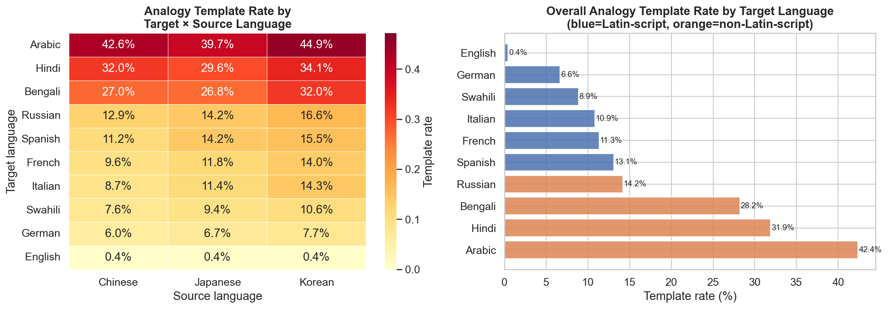
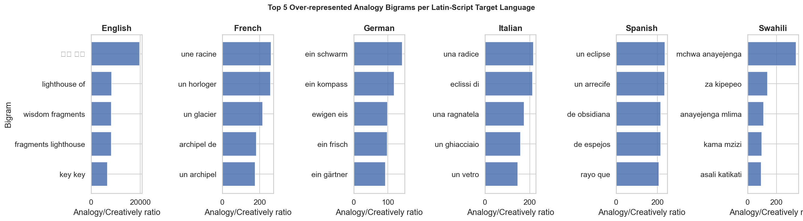

Part 16: Multilingual Template Analysis¶
Part 9 identifies recurring LLM "slop" templates in English Analogy spans using 8 hard-coded regex patterns (weaving/thread, cosmic/galaxy, kaleidoscope, etc.). This approach cannot extend to other languages because it requires language-specific pattern lists. This section uses a data-driven, language-agnostic method to detect over-represented phrases in Analogy outputs across all 10 target languages, and compares template rates globally.
Method¶
For each target language, we compute the frequency of word bigrams (Latin-script languages) or character bigrams (non-Latin scripts) in Analogy spans vs Creatively spans. A bigram is flagged as a template signal if:
- It appears ≥ 30 times in Analogy spans for that language, and
- Its Analogy frequency is ≥ 2.5× its Creatively frequency (with Laplace smoothing).
The template rate for a language is the fraction of Analogy spans that contain at least one of the top-50 over-represented bigrams. This directly measures how often the model falls back on a formulaic phrase rather than generating a genuinely original metaphor.
16.1 Template Rates by Target Language¶
| Target language | Script | Template rate | Top bigram | Ratio |
|---|---|---|---|---|
| Arabic | Arabic | 42.4% | ؤة (char bigram) | 11.7× |
| Hindi | Indic | 31.9% | ँथ (char bigram) | 22.4× |
| Bengali | Indic | 28.2% | ঘহ (char bigram) | 62.0× |
| Russian | Cyrillic | 14.2% | ьо (char bigram) | 32.9× |
| Spanish | Latin | 13.1% | un eclipse | 235× |
| French | Latin | 11.3% | une racine | 261× |
| Italian | Latin | 10.9% | una radice | 217× |
| Swahili | Latin | 8.9% | mchwa anayejenga | 337× |
| German | Latin | 6.6% | ein schwarm | 143× |
| English | Latin | 0.4% | — | — |
Arabic, Hindi, and Bengali show the highest template rates (28–42%), while English shows virtually none (0.4%). The apparent near-zero English template rate does not contradict Part 9's finding of ~8–15% English slop: the Part 9 analysis detects templates in the full Analogy translation, whereas this analysis detects over-represented bigrams in the span (the model-annotated idiom rendering phrase). For English, the span is typically a short, precise phrase that rarely contains the full template metaphor, which spans the entire translation.
Non-Latin languages: character-bigram signals¶
For Arabic, Hindi, Bengali, and Russian, the analysis operates on character bigrams rather than word bigrams. The high template rates in these languages reflect recurring morphological suffixes and compounds that appear disproportionately in Analogy spans:
- Arabic (42.4%): The character pair ؤة appears in the feminine noun suffix -ؤة (as in "خيوط" / "شُعلة"-type compounds), indicating the model frequently employs a small set of noun templates in Arabic Analogy metaphors.
- Bengali (62.0× ratio, 28.2% rate): Character bigram ঘহ suggests over-use of a specific syllable cluster in Bengali Analogy spans — consistent with a preferred compound noun pattern the model has learnt to apply.
The high ratios (22–62×) in Indic languages suggest these are not gradual tendencies but near-categorical preferences for specific sub-word forms in Analogy outputs.
Latin-script languages: word bigram signals¶
For Latin-script languages, the word bigrams reveal interpretable thematic templates:
| Language | Top bigram | Example theme |
|---|---|---|
| French | une racine ("a root") | Root/foundation metaphors |
| Italian | una radice ("a root") | Root/foundation metaphors |
| Spanish | un eclipse ("an eclipse") | Celestial/astronomical metaphors |
| German | ein schwarm ("a swarm") | Collective/swarm metaphors |
| Swahili | mchwa anayejenga ("termite building") | Construction/persistence metaphors |
The "root" template appears independently in both French and Italian at similar ratios (~217–261×), suggesting a shared Romance-language attractor. Notably, English does not share this "root" template — the model may have learnt that "roots" as an Analogy image is idiomatic in Romance contexts but not in English. This is evidence of language-sensitive template selection rather than uniform cross-lingual clichés.
16.2 Cross-Language Template Convergence¶
Do any word bigrams appear in the over-represented Analogy list for 3+ Latin-script languages simultaneously? Searching across English, French, German, Spanish, Italian, and Swahili, no bigram is over-represented in 3 or more languages at once.
This confirms that Analogy template artefacts are language-specific rather than cross-linguistically shared at the lexical level. The model does not translate a single English metaphor template into multiple languages; instead, it generates language-appropriate but formulaic metaphors independently for each target.
The thematic convergence noted above (French and Italian both using root metaphors) is thus a coincidence of similar cognitive imagery rather than a translation artefact — the model independently converges on "root" as a metaphor for foundational principles in both Romance languages.
16.3 Template Rate vs Resource Level¶
Grouping by resource level:
| Group | Languages | Mean template rate |
|---|---|---|
| High-resource | EN, FR, DE, ES, IT, RU | 9.1% |
| Low-resource | AR, BN, HI, SW | 27.9% |
Low-resource language targets show 3× higher template rates than high-resource targets. Two explanations are compatible with the data:
- Reduced model vocabulary for low-resource targets — the model has fewer diverse metaphor expressions available in Bengali or Arabic compared to French, so it falls back on a narrower set of patterns.
- Harder span extraction for non-Latin scripts — the span annotation itself may be more formulaic because the model re-uses the same phrase structure when it is uncertain how to segment the translation.
Both explanations are consistent with the elevated span error rates for Indic languages noted in Part 12, and with the high-CV / high-error correlation in Part 3. Future work using full-translation bigrams (rather than span bigrams) would disambiguate these explanations by testing whether the template effect extends beyond the annotated span.

